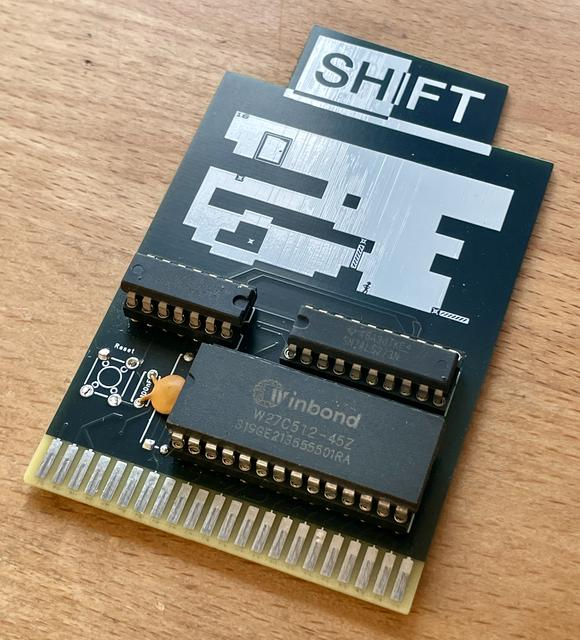
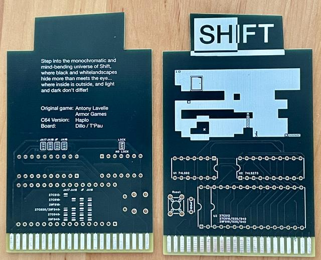

Ich habe die Platine aufgebaut und getestet. Die Schaltung enthält behebbare Fehler. Der Reset-Schalter darf nicht bestückt werden.


7 Stück verfügbar.
Ein Magic Desk Modul für das Spiel Shift.
| Komponente | Anzahl | Preis | Anbieter |
| Platine | 1 | €1.00 | |
| 100nF Kondensator | 1 | €0.03 | Mouser • Reichelt |
| 27C512 EPROM | 1 | — | AliExpress |
| 74LS02 | 1 | €0.48 | Mouser |
| 74LS273 | 1 | €0.92 | Reichelt |
| 14-Pin Sockel, schmal | 1 | €0.21 | Reichelt |
| 20-Pin Sockel, schmal | 1 | €0.30 | Reichelt |
| 28-Pin Sockel, breit | 1 | €0.50 | Reichelt |
| nur Platine | €1.00 | ||
| Teilbausatz | €3.44 |